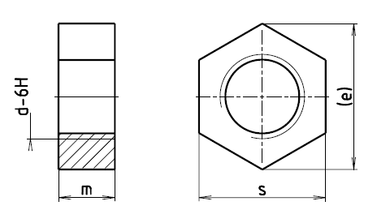

Příklad označení šestihranné matice se závitem M6 vyrobené z oveli minimální tvrdosti 110 HC (st):
ŠESTIHRANNÁ MATICE ISO 4036–M6–ST
| Závit d | M1,6 | M2 | M2,5 | M3 | (M3,5) | M4 | M5 | M6 | M8 | M10 |
|---|---|---|---|---|---|---|---|---|---|---|
| rozteč P | 0,35 | 0,4 | 0,45 | 0,5 | 0,6 | 0,7 | 0,8 | 1 | 1,25 | 1,5 |
| emin. | 3,28 | 4,18 | 5,31 | 5,87 | 6,44 | 7,5 | 8,63 | 10,89 | 14,2 | 17,59 |
| mmax. | 1 | 1,2 | 1,6 | 1,8 | 2 | 2,2 | 2,7 | 3,2 | 4 | 5 |
| mmin. | 0,6 | 0,8 | 1,2 | 1,4 | 1,6 | 1,8 | 2,3 | 2,72 | 3,52 | 4,52 |
| smax. | 3,2 | 4 | 5 | 5,5 | 6 | 7 | 8 | 10 | 13 | 16 |
| smin. | 2,9 | 3,7 | 4,7 | 5,2 | 5,7 | 6,64 | 7,64 | 9,64 | 12,57 | 15,57 |
| Materiál | Oceli | Neželezné kovy | |
|---|---|---|---|
| Mechanické vlastnosti | Pevnostní třída (materiál) |
min. 110 HV | |
| Mezinárodní normy |
ISO 8839 | ||
| Mezní rozměry, tolerance tvaru a polohy | Výrobní třída | B | |
| Mezinárodní norma | ISO 4759-1 | ||
| Povrch | dle výroby | hladký | |
| Požadavky na elektrolyticky vyloučené povlaky viz ISO 4042. Jestliže je požadována jiná povrchová ochrana, musí být dohodnuta mezi dodavatelem a odběratelem. |
|||